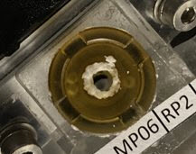
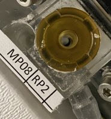
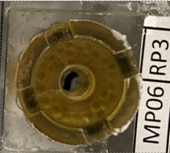
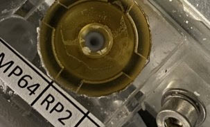
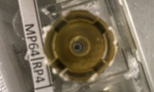
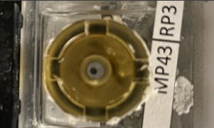

Replacing Wash Tower Nozzles and O-Rings
This topic includes information about how to replace the wash tower nozzles and O-rings.
Note: If O-rings are not correctly aligned during installation, system performance may be effected.
| Examples of incorrect O-ring placement | ||
|---|---|---|
 |
 |
 |
If the O-ring is correctly placed, it should not be visible at the bottom of the inner diameter.
| Examples of correct O-ring placement | ||
|---|---|---|
 |
 |
 |
Safety Reminder
Servicing the DxI 9000 instrument involves potential risks for pinch and puncture, electrical shock, and exposure to hazardous materials. You must mitigate these risks by taking appropriate countermeasures. See Safety for more information.
To determine if a wash tower nozzle needs replacement: